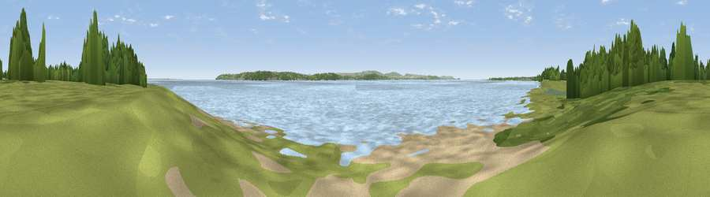

Viewpoint near Langley
#34452 in England · top 60% of its area beats it · near LangleyThe view, rendered

A 360° render of this exact spot computed from the terrain model, tree cover and land cover — summer colours, afternoon light, calibrated against photographs of famous viewpoints. Real trees, hedges and buildings will differ in detail.
The panorama
Grey silhouette: terrain skyline in each direction (720 bearings, Earth curvature and refraction included). Dashed green: skyline with trees (+15 m) and buildings (+8 m) as obstacles. Blue strip: how far the ground is visible on each bearing.
Where the view opens
Wedge length = distance to the farthest visible ground on that bearing (vegetation-aware). Rings at 10, 25 and 50 km.
What fills the view
72% water · 13% grassland · 10% woodland · 2% cropland · 2% wetland ·
Angular shares of the visible panorama (visual magnitude), not map area. Landscape diversity 0.41 (0–1 Shannon).
Key numbers
More beautiful places nearby
The staircase of upgrades: each row has a higher view potential than everything closer. Driving times are estimates from straight-line distance, calibrated against real road routing — check an actual route before setting out.
| Place | Direction | Drive | Score |
|---|---|---|---|
| Viewpoint near Gurnard | S · 4 km | ~10 min | 48.4 |
| Sticelett Hill | SSE · 5 km | ~11 min | 48.7 |
| Viewpoint near Porchfield | S · 6 km | ~12 min | 51.6 |
| Viewpoint near Porchfield | SSW · 7 km | ~14 min | 54.2 |
| Viewpoint near Cranmore | SW · 10 km | ~19 min | 60.4 |
| Viewpoint near Carisbrooke | S · 11 km | ~20 min | 72.1 |
| Viewpoint near Gatcombe | S · 13 km | ~25 min | 72.3 |
| Viewpoint near Arreton | SE · 14 km | ~25 min | 74.1 |
50.78441, -1.35393 · source: osm viewpoint · position refined by local search. Computed location — check access rights before visiting.